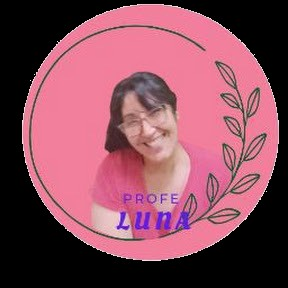

Dos caminos, una misma idea: aprender herramientas concretas, a tu ritmo y con constancia. Elegí el espacio que te corresponde.
Material complementario para reforzar lo que vemos en clase y para quien quiere arrancar su propio emprendimiento: costos, marketing, finanzas y armado del CV, aplicados a la realidad de la zona.
Ruta del emprendedor
Cada curso es independiente, pero juntos forman una trayectoria que culmina en tu propio plan de negocio.
Qué te cuesta producir y a qué precio conviene vender. Costos, gastos, margen de contribución, punto de equilibrio y estrategias de precio.
Empezar el curso →Cómo llegar al cliente que querés. Las 4 P —producto, precio, plaza y promoción— aplicadas a tu emprendimiento.
Empezar el curso →Cómo separar la plata del negocio de la plata personal. Cuentas, registros, manejo del efectivo y primeros pasos en inversiones.
Empezar el curso →Cómo proteger lo que ganás en un contexto inflacionario. Estrategias para no perder.
PróximamenteCómo buscar plata para crecer: créditos, herramientas del Estado y programas para emprendedores.
PróximamenteTomás todo lo aprendido y armás tu propio plan de negocio, siguiendo el marco de formulación de proyectos de Daniel Semyraz.
PróximamenteCursos transversales
No forman parte de la ruta del emprendedor, pero son útiles para muchos perfiles.
Construí un currículum profesional paso a paso. Cargás tus datos en cada módulo y al final descargás tu CV en PDF y la constancia.
Empezar el curso →Liquidación de sueldos: haberes, aportes, vacaciones, SAC e indemnizaciones para empleadas y empleadores.
PróximamenteCurso oficial gratuito que otorga el carnet de manipulador, necesario para gastronomía, ferias y repostería.
Inscribirme en ANMAT ↗Un espacio de formación para cooperativas, mutuales, asociaciones civiles, cooperativas de cuidado y organizaciones de la economía popular, en el marco de la Maestría en Economía Social, Comunitaria y Solidaria. No para competir mejor: para fortalecer la organización y comunicar la economía que ya hacen.
Las herramientas de marketing están calibradas para el mercado y dejan invisible lo que distingue a una organización social: la reciprocidad, el arraigo y el cuidado como bien común. Estas capacitaciones ofrecen un marco propio, que no se aplica desde afuera sino que se construye con cada organización —nadie sabe mejor que ella qué es y qué hace.
Capacitación destacada
Una tecnología social de comunicación para organizaciones de la ESCyS, en seis módulos de 1 h 30, con autoevaluación y constancia por módulo.
Por qué el marketing no alcanza, las tres lógicas de la economía plural (mercado, redistribución, reciprocidad) y la diferencia entre gestionar el sentido y co-producirlo.
Empezar el módulo →Identidad cooperativa: quiénes somos, por qué existimos y qué nos diferencia de una empresa o un programa estatal.
PróximamentePropósito territorial y cuidado como derecho; comunicación interna que sostiene la democracia; e incidencia para co-construir políticas públicas.
PróximamentePróximas capacitaciones
En preparación, dentro de la misma línea de trabajo territorial.
Cómo tomar decisiones entre muchas personas, prevenir la degeneración cooperativa y sostener la participación real.
PróximamenteEl cuidado como trabajo y como derecho: cooperativas de cuidado, reconocimiento y organización del sector en el Valle.
PróximamenteDel grupo de hecho a la organización con personería: pasos, requisitos y acompañamiento para regularizarse.
Próximamente
Soy Carina Luna, docente de Economía y Administración. Acompaño a jóvenes y adultos en la EPJA N° 753 de Rawson y en la EPJA N° 7713 de Trelew, y a quienes deciden emprender un proyecto propio.
Me estoy formando en la Maestría en Economía Social, Comunitaria y Solidaria, un enfoque que entiende la economía como algo que sucede entre personas y comunidades, no solo entre empresas y consumidores. Desde ahí pienso estos dos espacios: uno para el aula y el emprendimiento, otro para las organizaciones que sostienen la vida en común en el territorio.
Los cursos son y van a seguir siendo gratuitos. Si te resultó útil y querés colaborar para que llegue a más personas, podés hacer un aporte solidario al finalizar. Cualquier monto suma.
Elegí tu espacio arriba, entrá al curso y hacelo a tu ritmo. Al finalizar cada módulo descargás tu constancia.
Elegir mi espacio →